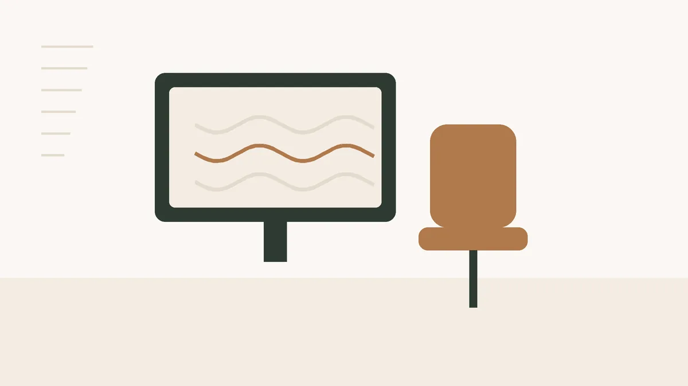

Masajes
Masaje descontracturante si trabajas sentado: qué alivia de verdad y cuándo toca el fisio
Buena parte de quienes piden un masaje descontracturante en el centro trabajan con ordenador en oficinas del Eixample o desde casa. Llegan con la nuca cargada y la pregunta de si con un masaje basta. A veces sí, y a veces no.
· 6 min de lectura · Centro Estética Barcelona

Qué le pasa a la espalda después de ocho horas de pantalla
El cuerpo aguanta mal estar quieto en la misma postura, más que una postura concreta. Con la cabeza adelantada hacia la pantalla, los músculos de la nuca y los trapecios trabajan todo el día para sostenerla. Al final de la semana se nota como una placa dura entre el cuello y los hombros, a veces con dolor de cabeza que sube desde la nuca.
Cuando palpamos, lo que encontramos suele repetirse: trapecio superior muy tenso, sobre todo del lado del ratón; musculatura entre los omóplatos cargada, y pectorales acortados de llevar los hombros hacia delante. Rara vez es solo «el cuello».
Lo que sí hace un masaje descontracturante
Es un masaje de presión firme y localizada. Se calienta el tejido, se trabajan las zonas con más tensión y se insiste en los puntos que duelen al presionar. Lo que puedes esperar al salir:
- Sensación de alivio y de más movilidad al girar la cabeza.
- Menos rigidez los días siguientes, que dura más o menos según lo que cambies en tu día a día.
- Algo de agujeta en la zona durante 24 o 48 horas. Es normal y se va sola.
Lo que no hace es corregir la causa. Si vuelves el lunes a la misma silla, con la pantalla baja y sin levantarte en cuatro horas, la tensión vuelve. El masaje ayuda a romper el círculo, pero no sustituye a moverse.
Masaje en un centro de estética o fisioterapia: no es lo mismo
Conviene decirlo sin rodeos. El fisioterapeuta es un profesional sanitario: valora, diagnostica lesiones y las trata. Nosotras hacemos masaje manual para tensión muscular y bienestar, sin diagnóstico ni tratamiento de lesiones.
Si lo que tienes es carga de estar sentada, un masaje encaja bien. Si hay una lesión, una hernia diagnosticada o un dolor que no sabes de dónde viene, lo primero es el fisio o el médico, y el masaje, si ellos lo ven bien, después.
Señales para no pedir cita con nosotras (todavía)
Hormigueo o adormecimiento que baja por el brazo hasta la mano, pérdida de fuerza, dolor después de un golpe o un tirón fuerte, mareo o visión borrosa con el dolor de cuello, fiebre, o un dolor que te despierta por la noche y no cambia al moverte. Con cualquiera de estas, consulta con tu médico antes de recibir un masaje.
Cuánto tiempo y cada cuánto
Para nuca, trapecios y parte alta de la espalda, 30 minutos suelen ser suficientes si solo trabajamos esa zona. Si además hay carga lumbar o piernas cansadas de estar sentada, compensa la sesión de 60.
La frecuencia depende de cómo llegues. Cuando la espalda está muy cargada, dos sesiones separadas por una semana y luego ver. Para mantenimiento, cada tres o cuatro semanas le va bien a la mayoría. Si necesitas masaje cada semana para aguantar, algo en tu puesto de trabajo o en tu rutina está pidiendo cambios, y te lo diremos.
El precio es de 35 € la sesión de 30 minutos y 50 € la de 60; tienes más detalle en la página de masajes.
Lo que ayuda entre sesión y sesión
Nada de esto es sofisticado, y precisamente por eso funciona cuando se hace:
- Sube la pantalla hasta que el borde superior quede a la altura de los ojos. Si usas portátil, un soporte y un teclado aparte cambian mucho.
- Levántate cada hora, aunque sea a por agua. Dos minutos bastan.
- Calor local en la nuca al terminar el día, diez o quince minutos.
- Hombros hacia atrás y abajo, varias veces al día, y respira con el abdomen. Con estrés tendemos a subir los hombros sin darnos cuenta.
Qué te preguntamos en la primera sesión
Antes de tumbarte en la camilla hablamos cinco minutos. No es un trámite: con esas respuestas decidimos dónde trabajar y con qué presión. Te preguntamos desde cuándo notas la tensión y si hay un lado peor que otro, en qué trabajas y cuántas horas pasas sentada, si haces deporte, si tomas medicación (sobre todo anticoagulantes, porque cambian la presión que podemos aplicar) y si tienes alguna lesión o diagnóstico en cuello u hombros.
Si algo de lo que nos cuentas encaja con las señales de arriba, lo decimos claramente y te recomendamos que lo consultes antes. Preferimos aplazar una sesión a trabajar a ciegas.
El día del masaje
Ven con ropa cómoda y sin cremas en la espalda. Al acabar, mejor no ir directa al gimnasio a cargar peso con los trapecios: camina, bebe agua y deja que el músculo se asiente. Si al día siguiente notas la zona sensible, es parte del proceso; si el dolor aumenta o aparece algo nuevo, avísanos y, si hace falta, consulta con tu médico.
Si trabajas cerca, en la zona del Eixample estamos a pocos minutos de Rocafort y Espanya, y una sesión de media hora cabe en la pausa de mediodía.
Pedir cita
¿Lo vemos en tu caso?
La valoración es gratuita. Te decimos qué tiene sentido hacer, qué no y cuánto costaría, sin compromiso.
Publicado el · Contenido revisado por Jeisy, responsable de Centro Estética Barcelona. Información general: no sustituye la consulta con un profesional sanitario.